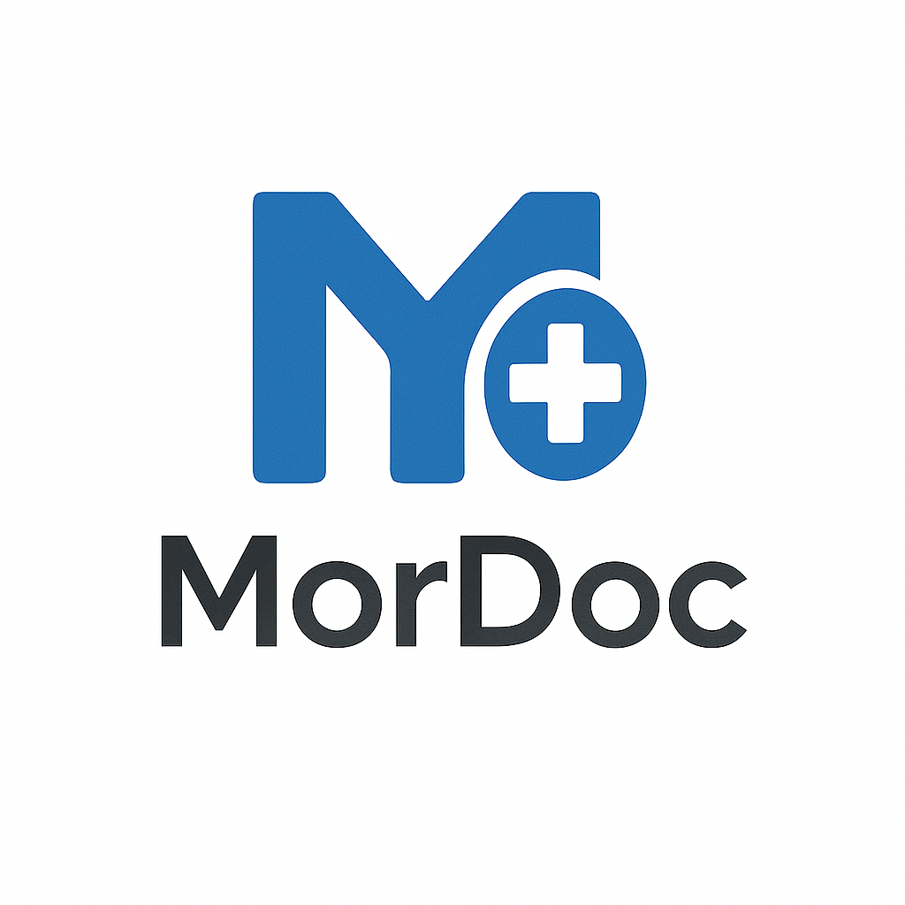

Mordoc Scribe
AI-supported clinical documentation intended to reduce the effort of turning consultations into structured notes. Human review remains essential.
Mordoc Health is Elint Harbour’s Africa-focused regional delivery arm and product portfolio, shaped around local care environments and infrastructure.

The portfolio focuses on practical tools that can fit existing workflows rather than assuming ideal infrastructure.
AI-supported clinical documentation intended to reduce the effort of turning consultations into structured notes. Human review remains essential.
A digital dermatology support concept. No diagnostic accuracy, regulatory status or clinical outcome claim is made here.
A planned connecting layer for the wider Mordoc portfolio.
Exploratory roadmap
Exploring lightweight health-record architecture for variable-connectivity environments.
Exploring how virtual pathways might connect with physical primary-care access.
The Middle East and the Americas are areas of future interest. Elint Harbour does not currently present them as operating regions; expansion would be partnership-led and evidence-driven.